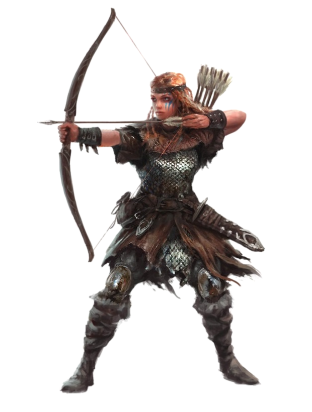
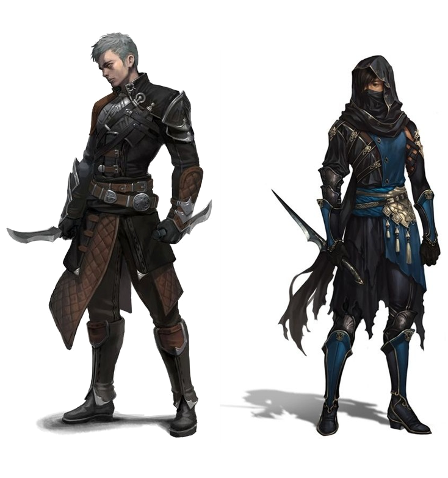

| - SIGMA RPG - | |
|---|---|
| por Elton Andrade | |
| Livro de Classes (Versão Online) | |
ArqueiroO Arqueiro é herói especializado em armas físicas de longo alcance: arcos e bestas. Para realizar um ataque básico, role a Destreza do personagem mais dano da arma. | ➢ Recuada Estratégica (inerente): uma vez por combate, ao receber dano, o personagem pode utilizar esta habilidade para escapar dos atacantes próximos e se deslocar para outra posição no campo de batalha (inimigos que estavam atacando o personagem passam a atacar algum outro herói, caso exista). Não consome o turno ao ser realizada. ➢ Disparo Crítico: o personagem efetua um poderoso disparo, causado dano crítico que aumenta o ataque em +1d/+2d/+3d/+4d/+5d e ignora 10 de Proteção do oponente. Custa 5 PMs por nível de habilidade. ➢ Concentração: ao ativar, o personagem gasta um turno estudando seus oponentes e o campo de batalha. Durante seus próximos 3 turnos, recebe +1/+2/+3/+4/+5 em Destreza. Custa 5 PMs por nível de habilidade. ➢ Esquiva Aprimorada (passiva): o personagem ganha +1/+2/+3/+4/+5 em esquiva. |
AssassinoO Assassino é um aventureiro cruel, especializado em eliminar seus alvos rápida e furtivamente. | Avanço Furtivo (inerente): uma vez por combate, permite se mover pelo campo de batalha sem gastar sua ação, podendo, por exemplo, se mover e logo em seguida atacar. Abater um inimigo (ou participar de um abate) permite utilizar esta habilidade novamente. Apunhalar (passiva): o personagem causa +1d/+2d/+3d/+4d/+5d dano adicional ao atacar um oponente pelas costas. Apunhalar não pode ser usada duas vezes seguidas contra o mesmo alvo. Envenenar Lâmina: o próximo ataque envenena o alvo, causando dano adicional de +2/+4/+6 (ignora armadura e resistências). Durante as próximas 4 rodadas, a vítima perde 2/4/6 de Vida no início do seu próprio turno. Custa 5 de mana. Essa habilidade só pode ser usada ao atacar com facas, adagas ou punhais. Algumas criaturas são imunes a veneno, não sendo afetadas por esta habilidade. Esquiva Perfeita (passiva): o Assassino pode desviar de qualquer ataque que consiga ver. Em vez de sua esquiva normal, ele pode realizar uma esquiva perfeita com 10/16/20% de chance de sucesso, independentemente da precisão do alvo. |